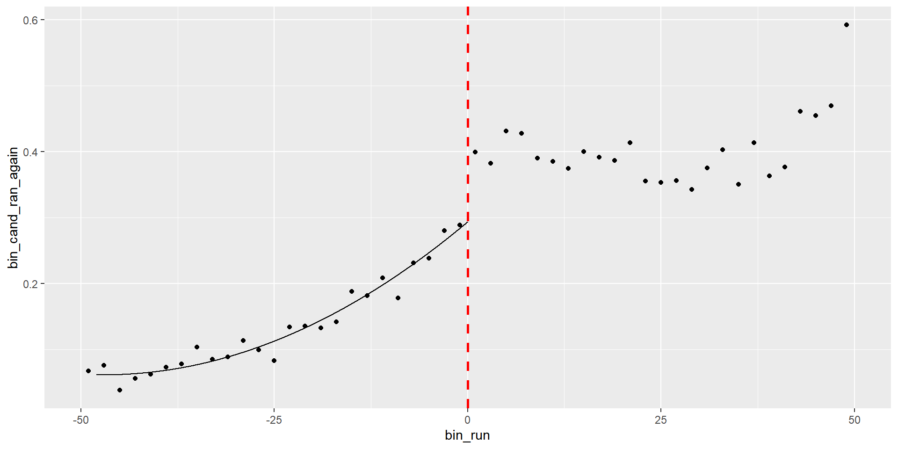
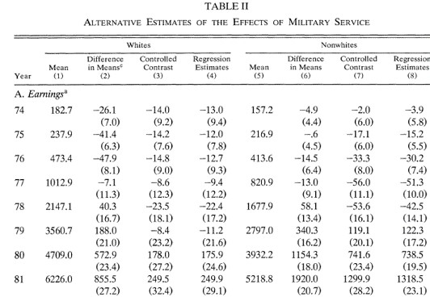
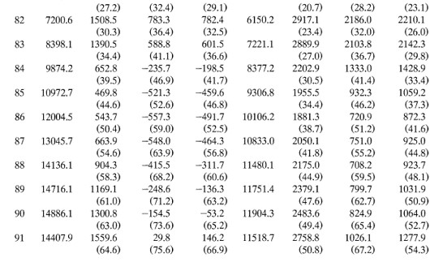
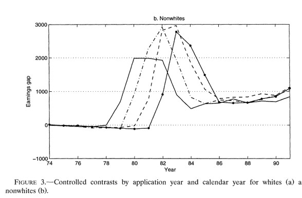

Clase 17. Métodos de matching
Inferencia Causal
Irvin Rojas
rojasirvin.com
Centro de Investigación y Docencia Económicas División de Economía
Motivación
Se considera la evaluación aleatoria como el gold standard de los métodos de evaluación
Bajo una aleatorización correcta de los tratamientos, las diferencias entre los grupos de tratamiento y control son atribuibles al tratamiento
Sin embargo, existen razones por las cuales es imposible llevar a cabo una asignación aleatoria
¿Nos conformamos con no poder decir nada?
Podemos usar métodos no experimentales que recaen sobre diversos supuestos para hacer inferencia sobre la efectividad del tratamiento
Supuestos de identificación
Sesgo de selección
- Las razones que deteriminan la asignación del tratamiento determinen también el valor de \(Y\)
\[ \begin{align} E(Y(1)|D=1)&-E(Y(0)|D=1)=\\ =&TOT+E(Y(0)|D=1)-E(Y(0)|D=0) \end{align} \]
La diferencia \(E(Y(0)|D=1)-E(Y(0)|D=0)\) es el sesgo de selección
Es decir, la diferencia en resultados entre tratados y no tratados nos da el \(TOT\) solo si el sesgo de selección es cero
Una forma de eliminar el sesgo de selección es mediante la asignación aleatoria del tratamiento
Esto no siempre es posible por lo que recurrimos a supuestos para eliminar el sesgo de selección
Métodos de apareamiento o matching
Los métodos apareamiento o matching recaen en el supuesto de independencia condicional
Al controlar por una serie de características \(X_i\), el tratamiento es como si fuera aleatorio
Podemos escribir
\[ E(Y(1)|D=1,X)=E(Y(1)|D=0,X) \]
\[ E(Y(0)|D=1,X)=E(Y(0)|D=0,X) \]
- Esto es, los valores esperados de \(Y(1)\) y \(Y(0)\) son iguales cuando nos fijamos en cada valor de \(X\)
Supuestos de identificación del TOT
Supuesto 1. Inconfundibilidad
\[ Y(0), Y(1) \perp D|X \]
Dado un conjunto de variables \(X\), los resultados potenciales son independientes del tratamiento
\(X\) debe incluir todas las variables que determinan el tratamiento y los resultados potenciales
Supuesto 2: Traslape
\[ 0< P(D=1|X) < 1 \]
\(X\) no predice \(D\) perfectamente
Personas con el mismo \(X\) tienen probabilidad positiva de ser tratados y no tratados
Supuestos de identificación del TOT
Cuando se cumple Supuesto 1 \(+\) Supuesto 2 se conoce como ignorabilidad fuerte
Heckman (1998) muestra que estás condiciones son demasiado estrictas
Para identificar el \(TOT\) es suficiente:
Supuesto 1a. Inconfundibilidad en el control
\[ Y(0) \perp D | X \]
- Supuesto 2a. Traslape débil
\[ P(D=1|X) < 1 \]
Matching exacto
Matching exacto
Un estimador de matching exacto consiste en emparejar individuos tratados y no tratados para cada valor específico de las \(X\) y luego tomar el promedio ponderado de las diferencias
Tenemos datos observacionales de individuos que recibieron y no recibieron un tratamiento
Tenemos una serie de características discretizadas en \(X_i\)
Asumimos que controlando por las características \(X_i\) podemos obtener diferencias causales
Luego hacemos un promedio de dichas diferencias
Ejemplo: programa hipotético de empleo
- Usemos el ejemplo de MT (The Mixtape)
read_data <- function(df)
{
full_path <- paste("https://raw.github.com/scunning1975/mixtape/master/",
df, sep = "")
df <- read_dta(full_path)
return(df)
}
training_example <- read_data("training_example.dta") %>%
slice(1:20)
data.treat <- training_example %>%
select(unit_treat, age_treat, earnings_treat) %>%
slice(1:10) %>%
mutate(earnings_treat=as.numeric(earnings_treat))
data.control <- training_example %>%
select(unit_control, age_control, earnings_control)
data.matched <- training_example %>%
select(unit_matched, age_matched, earnings_matched) %>%
slice(1:10)Ejemplo: programa hipotético de empleo
Supongamos que observamos los siguientes datos
# A tibble: 10 × 3
unit_treat age_treat earnings_treat
<dbl> <dbl> <dbl>
1 1 18 9500
2 2 29 12250
3 3 24 11000
4 4 27 11750
5 5 33 13250
6 6 22 10500
7 7 19 9750
8 8 20 10000
9 9 21 10250
10 10 30 12500# A tibble: 20 × 3
unit_control age_control earnings_control
<dbl> <dbl> <dbl>
1 1 20 8500
2 2 27 10075
3 3 21 8725
4 4 39 12775
5 5 38 12550
6 6 29 10525
7 7 39 12775
8 8 33 11425
9 9 24 9400
10 10 30 10750
11 11 33 11425
12 12 36 12100
13 13 22 8950
14 14 18 8050
15 15 43 13675
16 16 39 12775
17 17 19 8275
18 18 30 9000
19 19 51 15475
20 20 48 14800Ejemplo: programa hipotético de empleo
- Noten que si hiciéramos diferencias simples obtendríamos
- Parece que en el grupo de control ganan más (efecto de tratamiento negativo)
El principal problema con esta diferencia es que sabemos que los ingresos crecen con la edad
Pero notemos que la muestra de no tratados tiene mayor edad promedio
- Estaríamos confundiendo el efecto de la edad
Ejemplo: programa hipotético de empleo
Construyamos la muestra apareada
Para cada individuo en el grupo tratado, buscaremos uno en el de control que tenga la misma edad
Decimos que esa pareja hizo match
Por ejemplo, la primera unidad tratada, con 18 años y un ingreso de 9,500 estaría emparejada con la unidad 14 del grupo de control, que tiene también 18 años y un ingreso de 9,500
- Para el individuo 18 construimos su ingreso contrafactual
Cuando hay varias unidades en el grupo de control que pueden ser empatadas con la de tratamiento, podemos construir el ingreso contrafactual calculando el promedio
- Del grupo de control, los individuos 10 y 18 tienen 30 años, con ingresos 10,750 y 9,000, por lo que usamos el promedio (9875) para crear el contrafactual
Ejemplo: programa hipotético de empleo
- La muestra apareada o contrafactual será
# A tibble: 10 × 3
unit_matched age_matched earnings_matched
<dbl> <dbl> <dbl>
1 1 18 8050
2 2 29 10525
3 3 24 9400
4 4 27 10075
5 5 33 11425
6 6 22 8950
7 7 19 8275
8 8 20 8500
9 9 21 8725
10 10 30 9875- Noten que la edad es la misma entre los tratados y la muestra apareada
- Decimos que la edad está balanceada
- Y entonces podemos calcular el efecto de tratamiento como la diferencia de ingresos entre los tratados y la muestra apareada
- Hay un efecto positivo del programa de 1695 unidades monetarias
Estimador de matching exacto
- Lo anterior nos permite definir el estimador de matching exacto del TOT
\[\hat{\delta}_{TOT}=\frac{1}{N_T}\sum_{D_i=1}\left(Y_i-\left(\frac{1}{M}\sum_{m=1}^{M}Y_{jm(i)}\right)\right)\]
Importancia del soporte común
- Observemos lo que ocurre con la distribución de edades en ambos grupos
Tratados

No tratados

El supuesto de traslape débil para identificar el TOT significa que para cada unidad tratada, hay al menos un no tratado
De otra forma, no podemos hacer la comparación
Estimador de matching exacto
Hasta aquí, solo hemos imputado el contrafactual para cada unidad en el grupo tratado
Si podemos imputar también, para cada unidad no tratada, su correspondiente contrafactual tratado, podemos estimar el ATE
Y un estimador de matching exacto del ATE sería:
\[\hat{\delta}_{ATE}=\frac{1}{N}\sum_{i}^N(2D_i-1)\left(Y_i-\left(\frac{1}{M}\sum_{m=1}^{M}Y_{jm(i)}\right)\right)\]
Ejemplo de la vida real
Tenemos varias características en \(X_i\), no solo la edad
Esto hace que cada valor \(X_i=x_i\) este representado por una celda
\(X_i\) incluye, por ejemplo, raza, año de solicitud de ingreso al programa, escolaridad, calificación en examen de aptitud, año de nacimiento (son las características del ejemplo que veremos más adelante)
Estas características definen celdas y dentro de cada celda tenemos tratados y no tratados
Efecto del tratamiento con matching exacto
- El TOT asumiendo inconfundibilidad:
\[ \begin{aligned} \delta^M=TOT&=E\left\{ E(y_{1i}|X_i,D_i=1)-E(y_{0i}|X_i,D_i=0)|D_i=1\right\} \\ &=E\left\{\delta_X | D_i=1\right\} \end{aligned} \]
\(\delta_X\) es la diferencia de ingresos promedio entre estados de tratamiento para cada valor de \(X_i\)
Con \(X_i\) discreta y con una muestra disponible:
\[ \delta^M=\sum_{x} \delta_x P(X_i=x|D_i=1) \]
Ejemplo: veteranos de guerra en Estados Unidos
Angrist (1998), Estimating the Labor Market Impact of Voluntary Military Service Using Social Security Data on Military Applicants
El tratamiento es haber servido en el ejercito, algo que claramente tiene autoselección
Se trata de estimar el efecto en el ingreso
Los autores construyen celdas de acuerdo a las características antes mencionadas
- Raza, año de solicitud de ingreso al programa, escolaridad, calificación en examen de aptitud, año de nacimiento
Ejemplo: veteranos de guerra en Estados Unidos


Ejemplo: veteranos de guerra en Estados Unidos
Noten que la columna (2) muestra lo que se hubiera concluido si solo se comparan diferencias de medias
Antes de 1980, las diferencias eran muy pequeñas (cero en términos prácticos)
En esta aplicación esta comparación llevaría a conclusiones incorrectas
Además, las diferencias para no-blancos y blancos son distintas
Hay un pico en los afectos alrededor de 1982
En esta aplicación, los resultados por matching y regresión son muy parecidos hasta 1984
La conclusión es que existe evidencia de efectos negativos en los ingresos por haber servido en el ejército en los blancos y efectos positivos para los individuos de otras razas
Ejemplo: veteranos de guerra en Estados Unidos


El propensity score
Matching exacto es impráctico
En la práctica es difícil manejar problemas en espacios de múltiples dimensiones: maldición de la dimensionalidad
El problema de la maldición de la dimensionalidad se exacerba con el tamaño limitado de las bases de datos
Si \(X\) tuviera solo indicadores binarios, el número de posibles combinaciones sería \(2^s\)
Por ejemplo, si solo tuviéramos \(X_1=\{\text{menor de 35 años}, \text{con 35 años o más}\}\), \(X_2=\{\text{más que preparatoria}, \text{menos que preparatoria}\}\), \(X_3=\{\text{indígena}, \text{no indígena}\}\), tendríamos que hacer ocho comparaciones:
- menor de 35 años, más que preparatoria, indígena
- menor de 35 años, más que preparatoria, no indígena
- …
- con 35 años o más, menos que preparatoria, no indígena
Pero Si \(X\) incluye muchas variables, algunas tomando muchos valores, esto se vuelve imposible de realizar
Maldición de la dimensionalidad
El requerimiento de soporte común significa que debemos tener tratados y no tratados para cada valor de \(X_i\) para hacer comparaciones
Cuando \(X_i\) tiene muchas dimensiones, resulta un problema de escasez o sparseness
Algunas celdas estarán vacías, o solo tendrán tratados, o solo tendrán no tratados
Si tenemos unidades en todas las celdas de control, aún podemos estimar el TOT
Noten que cuando completamos la pase pareada en el ejemplo hipotético siempre encontramos a alguien en el grupo de control para asignárselo a un tratado
Pero al revés, no siempre es posible: por ejemplo, no hay ningún tratado de 48 años
Teorema del PS (Rosenbaum y Rubin, 1983)
Corolario 1. Inconfundibilidad dado el propensity score
El Supuesto 1 implica:
\[ Y(0), Y(1) \perp D|P(X) \]
donde \(P(X)=P(D=1|X)\) es la probabilidad de ser tratado dado un conjunto de covariables \(X\), el propensity score o PS
Estimación
- Podemos estimar el efecto del tratamiento:
\[ TOT^{PSM}=E_{P(X)|D=1} \left(E(Y(1)|D=1, P(X))-E(Y(0)|D=0,P(X)) \right) \]
- El \(TOT\) es la diferencia en la variable de resultados de los tratados y los no tratados pesada por la distribución del PS en los tratados
Estimación
Debemos por tanto primero calcular el PS
Se empatan o se hace match de unidades que fueron tratadas con unidades que no lo fueron usando el PS
Se mide la diferencia en la variable de resultados entre estos grupos
Se hace un promedio ponderado de las diferencias
Implementación
Estimación del PS
Escoger el algoritmo de matching
Comprobar la calidad del matching
Estimar el \(TOT\)
Especificar el modelo del PS
Se usa un modelo probit o logit
Prueba y error. Maximizar la tasa clasificación de tratamientos y controles usando \(\bar{P}\), la proporción de tratamientos en la muestra
Significancia estadística. Usar solo las variables estadísticamente significativas, comenzando con un modelo muy básico
Validación cruzada. Comenzar con un modelo simple y agregar grupos de variables comparando las que reduzcan el error cuadrático promedio
El propósito del PS es sobre todo generar balance de las variables en \(X\)
Recomendaciones prácticas
Las características \(X\) que determinan la probabilidad de tratamiento deben ser observables
Las variables usadas para calcular el PS no deben haber sido afectadas por el tratamiento
Idealmente usamos variables \(X\) pre-intervención
Cuando no hay \(X\) pre-intervención, a veces se puede obtener el PS con variables post-intervención siempre y cuando estas no hayan sido afectadas por el tratamiento (pocas veces recomendado)
Extremadamente recomendable
- Caliendo, M., & Kopeinig, S. (2008). Some practical guidance for the implementation of propensity score matching. Journal of economic surveys, 22(1), 31-72.
Próxima sesión
Veremos un ejemplo del PSM
Becerril, J., & Abdulai, A. (2010). The impact of improved maize varieties on poverty in Mexico: a propensity score-matching approach. World development, 38(7), 1024-1035.
Veremos cómo estimar el PSM en R usando distintos algoritmos de matching
Presentación creada usando el paquete xaringan en R.
El chakra viene de remark.js, knitr, y R Markdown.
Material de clase en versión preliminar.
No reproducir, no distribuir, no citar.